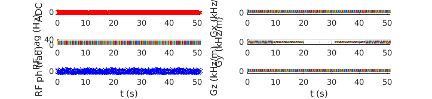
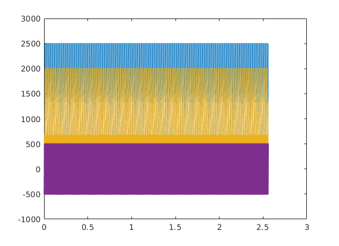
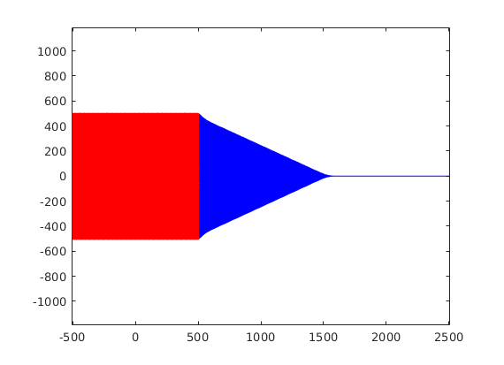

Contents
sys = mr.opts('MaxGrad', 22, 'GradUnit', 'mT/m', ...
'MaxSlew', 120, 'SlewUnit', 'T/m/s', ...
'rfRingdownTime', 20e-6, 'rfDeadTime', 100e-6, 'adcDeadTime', 10e-6);
seq=mr.Sequence(sys);
fov=256e-3; Nx=256; Ny=256;
alpha=10;
sliceThickness=3e-3;
TR=12e-3;
TE=5e-3;
rfSpoilingInc=117;
roDuration=3.2e-3;
[rf, gz] = mr.makeSincPulse(alpha*pi/180,'Duration',3e-3,...
'SliceThickness',sliceThickness,'apodization',0.42,'timeBwProduct',4,'system',sys);
deltak=1/fov;
gx = mr.makeTrapezoid('x','FlatArea',Nx*deltak,'FlatTime',roDuration,'system',sys);
adc = mr.makeAdc(Nx,'Duration',gx.flatTime,'Delay',gx.riseTime,'system',sys);
gxPre = mr.makeTrapezoid('x','Area',-gx.area/2,'Duration',1e-3,'system',sys);
gzReph = mr.makeTrapezoid('z','Area',-gz.area/2,'Duration',1e-3,'system',sys);
phaseAreas = ((0:Ny-1)-Ny/2)*deltak;
gyPre = mr.makeTrapezoid('y','Area',max(abs(phaseAreas)),'Duration',mr.calcDuration(gxPre),'system',sys);
peScales=phaseAreas/gyPre.area;
gxSpoil=mr.makeTrapezoid('x','Area',2*Nx*deltak,'system',sys);
gzSpoil=mr.makeTrapezoid('z','Area',4/sliceThickness,'system',sys);
delayTE=ceil((TE - mr.calcDuration(gxPre) - gz.fallTime - gz.flatTime/2 ...
- mr.calcDuration(gx)/2)/seq.gradRasterTime)*seq.gradRasterTime;
delayTR=ceil((TR - mr.calcDuration(gz) - mr.calcDuration(gxPre) ...
- mr.calcDuration(gx) - delayTE)/seq.gradRasterTime)*seq.gradRasterTime;
assert(all(delayTE>=0));
assert(all(delayTR>=mr.calcDuration(gxSpoil,gzSpoil)));
rf_phase=0;
rf_inc=0;
for i=1:Ny
for c=1:length(TE)
rf.phaseOffset=rf_phase/180*pi;
adc.phaseOffset=rf_phase/180*pi;
rf_inc=mod(rf_inc+rfSpoilingInc, 360.0);
rf_phase=mod(rf_phase+rf_inc, 360.0);
seq.addBlock(rf,gz);
seq.addBlock(gxPre,mr.scaleGrad(gyPre,peScales(i)),gzReph);
seq.addBlock(mr.makeDelay(delayTE(c)));
seq.addBlock(gx,adc);
seq.addBlock(mr.makeDelay(delayTR(c)),gxSpoil,mr.scaleGrad(gyPre,-peScales(i)),gzSpoil)
end
end
check whether the timing of the sequence is correct
[ok, error_report]=seq.checkTiming;
if (ok)
fprintf('Timing check passed successfully\n');
else
fprintf('Timing check failed! Error listing follows:\n');
fprintf([error_report{:}]);
fprintf('\n');
end
Timing check passed successfully
prepare sequence export
seq.setDefinition('FOV', [fov fov sliceThickness]);
seq.setDefinition('Name', 'gre');
seq.write('gre.seq')
plot sequence and k-space diagrams
seq.plot('timeRange', [0 5]*TR);
[ktraj_adc, t_adc, ktraj, t_ktraj, t_excitation, t_refocusing] = seq.calculateKspacePP();
figure; plot(t_ktraj, ktraj');
hold; plot(t_adc,ktraj_adc(1,:),'.');
figure; plot(ktraj(1,:),ktraj(2,:),'b');
axis('equal');
hold;plot(ktraj_adc(1,:),ktraj_adc(2,:),'r.');
Current plot held
Current plot held
  
very optional slow step, but useful for testing during development e.g. for the real TE, TR or for staying within slewrate limits
rep = seq.testReport;
fprintf([rep{:}]);
Number of blocks: 1280
Number of events:
RF: 256
Gx: 768
Gy: 512
Gz: 768
ADC: 256
Sequence duration: 3.072000s
TE: 0.005000s
TR: 0.012000s
Flip angle: 10.00°
Unique k-space positions (a.k.a. columns, rows, etc): 256
Unique k-space positions (a.k.a. columns, rows, etc): 256
Dimensions: 2
Spatial resolution: 1.00 mm
Spatial resolution: 1.00 mm
Repetitions/slices/contrasts: 1 range: [1 1]
65536 k-space position(s) repeated 1 times
Cartesian encoding trajectory detected
Block timing check passed successfully
Max. Gradient: 934579 Hz/m == 21.95 mT/m
Max. Gradient: 561798 Hz/m == 13.20 mT/m
Max. Gradient: 932401 Hz/m == 21.90 mT/m
Max. Slew Rate: 4.91884e+09 Hz/m/s == 115.53 T/m/s
Max. Slew Rate: 5.10725e+09 Hz/m/s == 119.96 T/m/s
Max. Slew Rate: 4.93827e+09 Hz/m/s == 115.99 T/m/s
Max. Absolute Gradient: 1434722 Hz/m == 33.70 mT/m
Max. Absolute Slew Rate: 8.6233e+09 Hz/m/s == 202.54 T/m/s